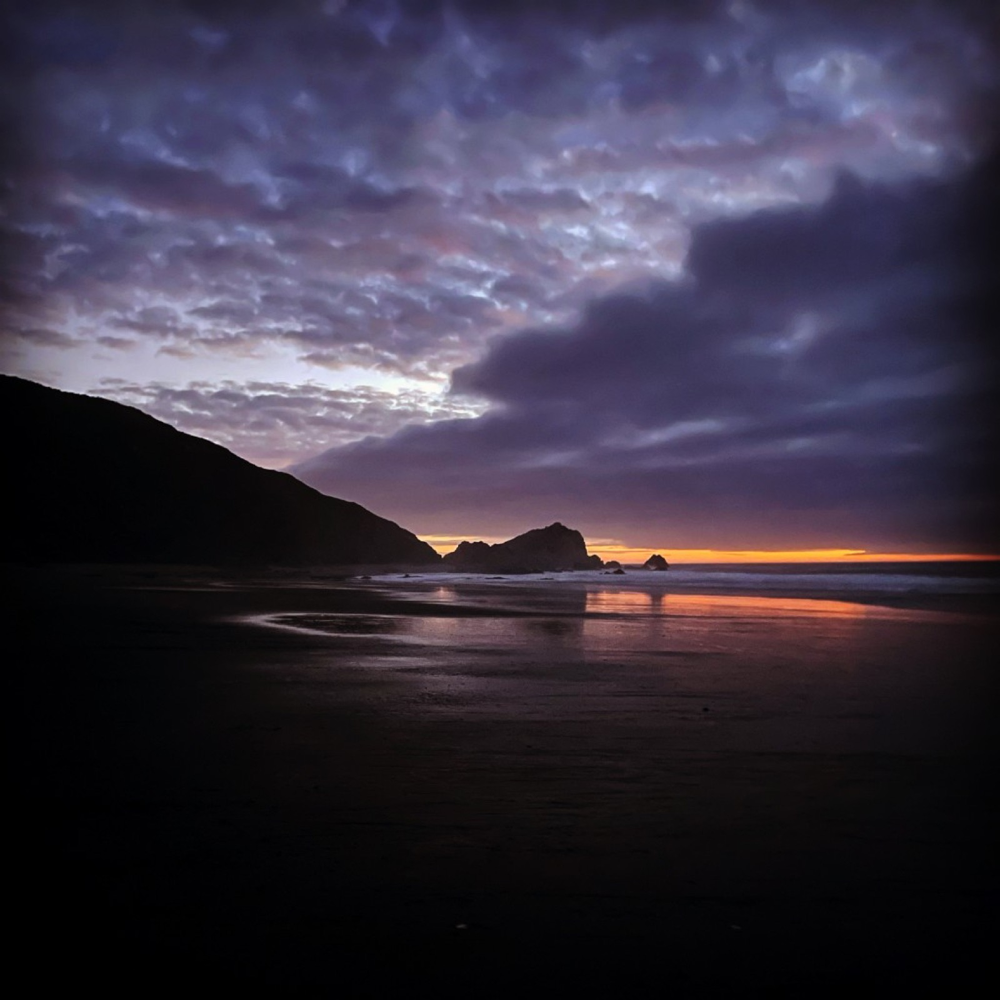

Best Senior Photo Locations in West Michigan
Updated for class of 2026 · Holland, Zeeland & Lake Michigan

If you're picking a spot for senior photos around Holland or West Michigan, the lakeshore gives you dunes, piers, brick downtown backdrops, and golden-hour color that studio walls can't match. A few good spots below. Mix a classic beach session with an urban or park look for variety in your gallery.
Holland & immediate area
Holland State Park & Big Red Lighthouse
The iconic Holland State Park boardwalk and Big Red views are among the most photographed landmarks on Lake Michigan, good for cap-and-gown, casual denim, or sunset senior portraits. Arrive early for parking in peak summer; permit info is on Michigan DNR park pages.
Tunnel Park & Laketown Beach
Tunnel Park's dune tunnel and Laketown's quieter shoreline give you sand, grass, and water without always fighting the biggest crowds at the state park. Great for barefoot, flowy-dress, or sports-themed shots.
Downtown Holland
8th Street brick, murals, coffee shops, and tulip-season color (see Holland Tulip Time history) work for dressy and streetwear senior looks. Evening sessions catch storefront glow and softer shadows.
Windmill Island Gardens & Kollen Park
Dutch windmill gardens and waterfront paths at Kollen Park add story and color for families who want a classic Holland look in graduation announcements.
Zeeland & inland options
Zeeland seniors often split sessions between hometown parks and a Lake Michigan run. Tree-lined neighborhoods, athletic fields, and church or architecture near campus photograph cleanly for yearbook-style formals plus casual looks.
Grand Haven & north along the lakeshore
Grand Haven State Park & pier
The pier, lighthouse, and beach at Grand Haven State Park mirror Holland's vibe with dramatic sky and wave backdrops. Popular with class of 2026 seniors from Grand Haven and Spring Lake schools.
South Haven & Saugatuck
South Haven's pier light and Saugatuck's dunes (including Oval Beach area views) suit seniors willing to drive 30-45 minutes for taller dunes and arts-district texture.
How to choose one location vs. two
- One location: best when you want variety at a single beach or downtown block. Less driving, more outfit changes.
- Two locations: pair beach + urban (e.g., Holland State Park + downtown) for different looks in your announcements.
- Permits & rules: state parks and some downtown districts have tripod or commercial rules. Your photographer should handle timing and compliance.
Best time of day
Michigan summer golden hour (roughly 1-2 hours before sunset) flatters skin and Lake Michigan skies. Overcast days, common along the lakeshore, give soft, even light similar to open shade. See our portfolio beach work for examples.
Book a senior session with Zuri Visuals or read what to wear for senior pictures before you go.